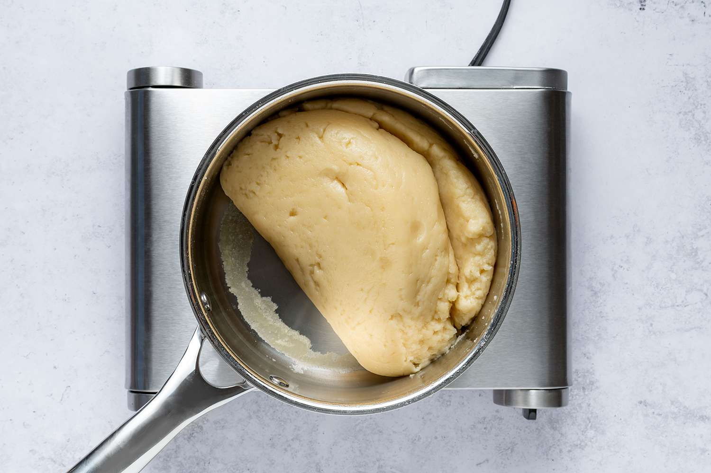
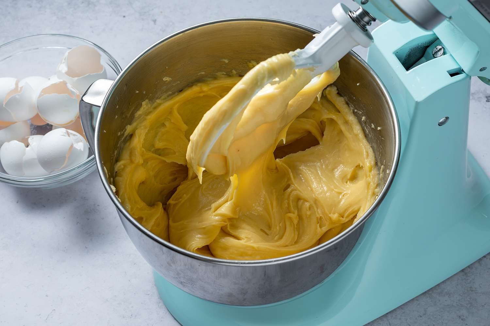
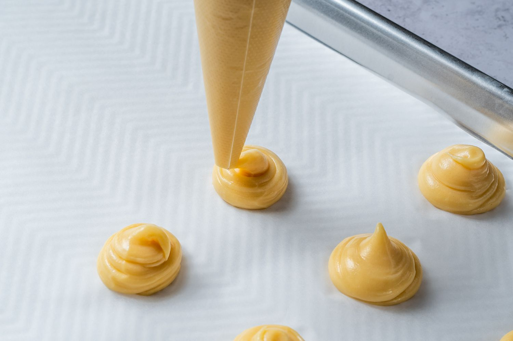
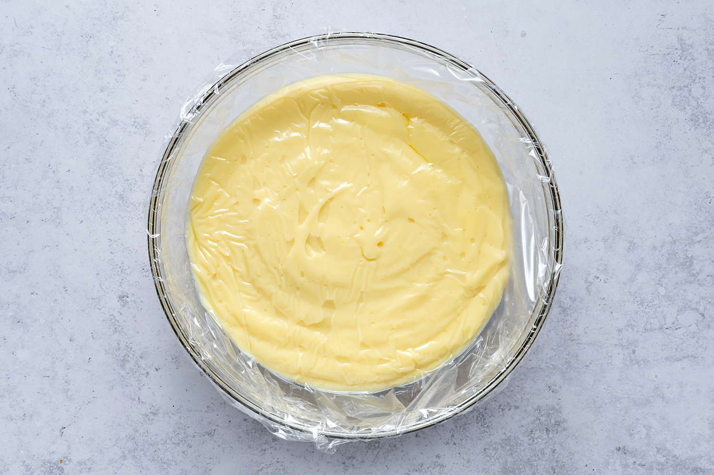
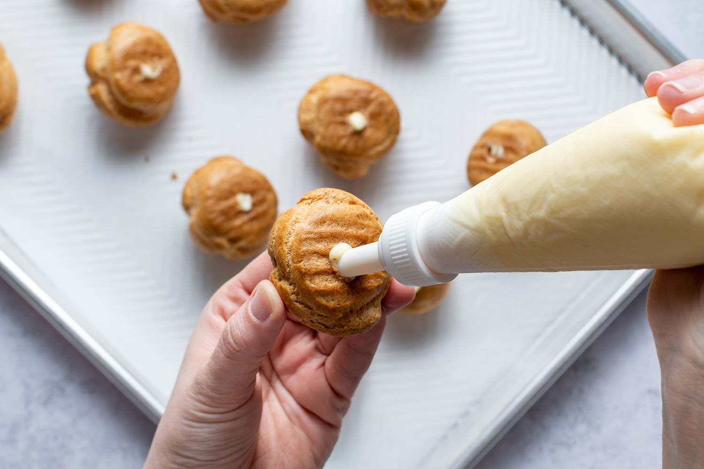
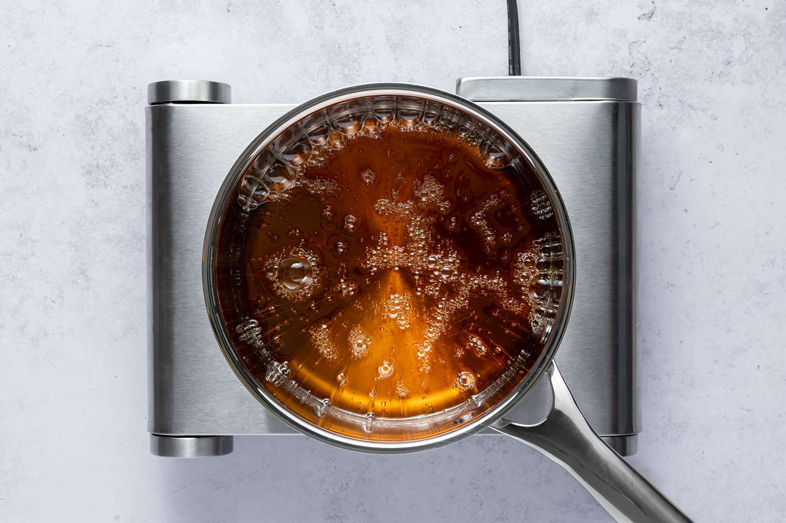
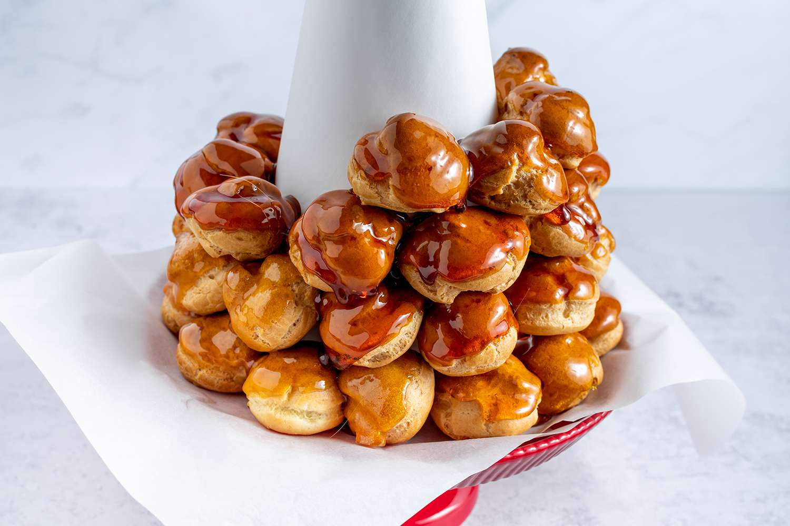

-
1 Preheat the oven to 425 degrees. In a large saucepan, bring the water, butter, salt, and sugar to a rolling boil over medium-high heat. When it boils, immediately take the pan off the heat. Stirring with a wooden spoon, add all the flour at once and stir hard until all the flour is incorporated, 30 to 60 seconds. Return the pan to the heat and cook, stirring, 30 seconds to evaporate some of the moisture.

-
2 Scrape the mixture into a mixer fitted with a paddle attachment (or use a hand mixer). Mix at medium speed. With the mixer running, and working 1 egg at a time, add 6 of the eggs, stopping after each addition to scrape down the sides of the bowl. Mix until the dough is smooth and glossy and the eggs are completely incorporated. The dough should be thick, but should fall slowly and steadily from the beaters when you lift them out of the bowl. If the dough is still clinging to the beaters, add 1 or 2 more eggs, and mix until incorporated.

-
3 Using a pastry bag fitted with a large plain tip, pipe the dough in big kisses onto a parchment lined baking sheet. Whisk 2 eggs with 3 teaspoons of water. Brush the surface of the dough with the egg wash to knock down the points (do not use all the egg wash.) Bake 15 minutes, then reduce the heat to 375-degrees and bake until puffed up and light golden brown, about 20 minutes more. Try not to open the oven door too often during the baking. Let cool on the baking sheet. The recipe can be made up to this point and frozen in plastic bags.

-
4 Filling: In a medium saucepan, heat the milk and vanilla bean to a boil over medium heat. Immediately turn off the heat and set aside to infuse for 10 to 15 minutes. In a bowl, whisk the egg yolks and sugar until light and fluffy. Add the cornstarch and whisk vigorously until no lumps remain. Whisk in 1/4 cup of the hot milk mixture until incorporated. Whisk in the remaining hot milk mixture, reserving the empty saucepan.

-
5 Pour the mixture through a strainer back into the saucepan. Cook over medium-high heat, whisking constantly, until thickened and slowly boiling. Remove from the heat and stir in the butter and any flavorings if you want to make a different flavor like chocolate or coffee. Let cool slightly. Cover with plastic wrap, lightly pressing the plastic against the surface to prevent a skin from forming. Chill at least 2 hours or until ready to serve. The custard can be made up to 24 hours in advance. Poke a hole with a plain pastry tip in the bottom of each cream puff and pipe it full of the custard.

-
6 Caramel: Dissolve the sugar in a saucepan with the water, making an "X" through the sugar with your finger to allow the water to slowly soak into the sugar. Boil to make a light golden caramel then dip the bottom of the pan in an ice bath to stop the cooking.

-
7 Dip the sides of the puffs in the caramel and stick them together (approximately 20 cream puffs) in a circle, tops facing out. Make a second row on top of the first but a bit smaller to draw the circle in and create a tower of cream puffs. Check it from all sides occasionally to make sure it's straight. When it's finished, drizzle it with caramel all over. You can also stick on decorative elements with the caramel in the crevices, like candied violets, gold balls, gum paste flowers, sugar covered almonds, etc. Serve same-day.
